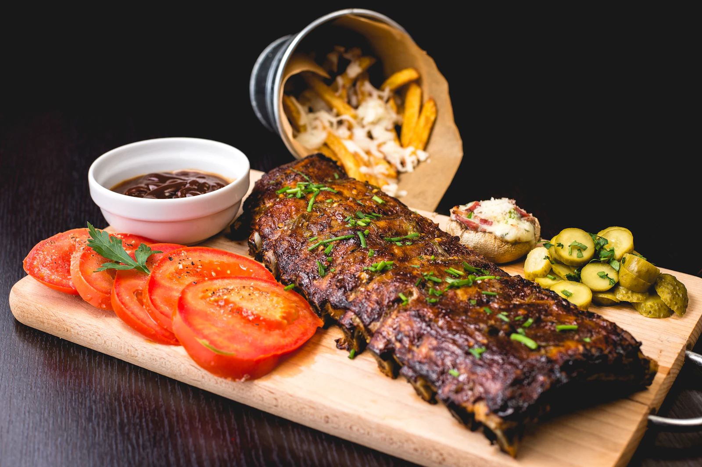
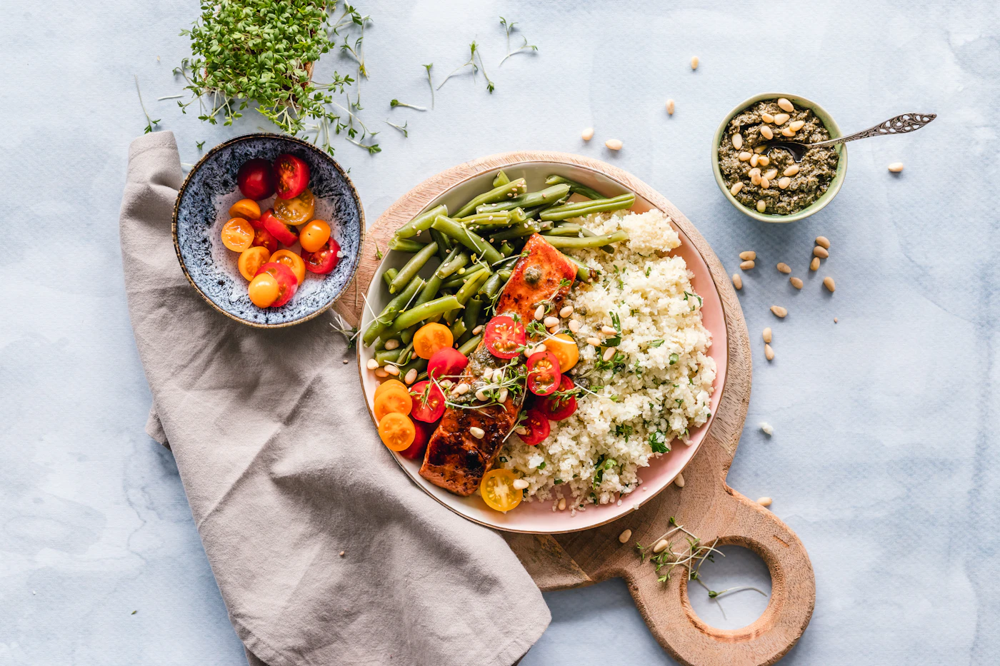

Bilbao · Cocina vasca contemporánea
Tradición que
se mueve.
Una cadena nacida en Bilbao para acercar el producto vasco a una mesa actual, directa y sin artificios.
Ver platos estrella
Nuestra manera de hacer
Menos decoración.
Más sabor.
Trabajamos con recetas reconocibles, proveedores cercanos y una mirada contemporánea.
Almi Chain propone espacios diferentes con una misma idea: que cada plato tenga un origen claro y que cada visita se sienta cercana.
Selección de la casa
Platos
estrella.


Encuéntranos
Bilbao
nos inspira.
ZonaBilbao, Bizkaia
HorarioLun–Dom · 12:30–23:30
Contacto+34 944 000 000
Dirección, horario y teléfono provisionales para la demostración.
Hablemos
Tu mesa
empieza aquí.
Formulario de demostración. No envía datos ni realiza reservas reales.